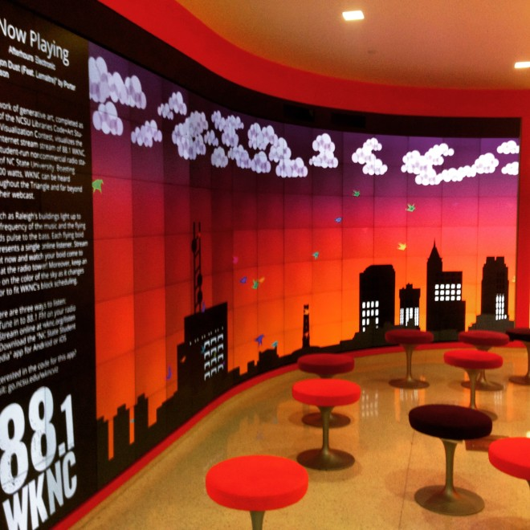
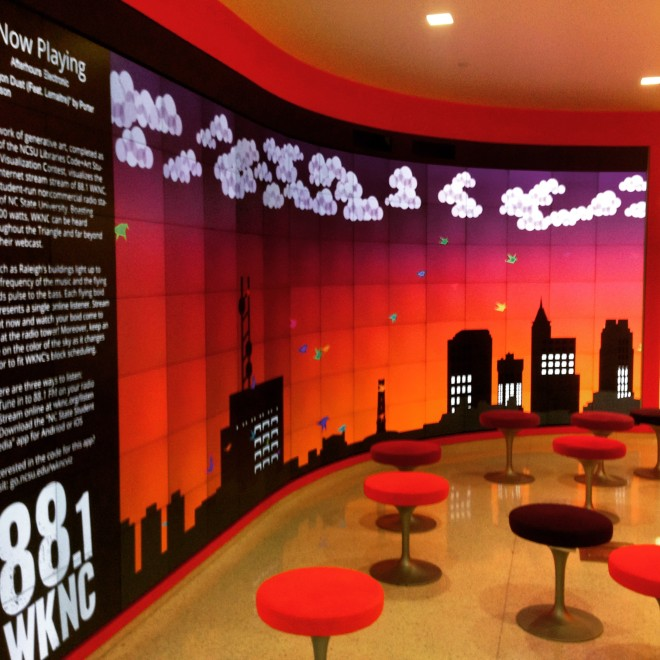

2016 - Current | iOS: Swift 3.0 | iOS: Messages Framework | Storyboardless Auto Layout |
Emoji Ink Messenger is an iMessages application I am currently developing alongside the artists at Tight Corp(tig.ht). It is a natural progession of their Emoji Ink web and iOS applications. It allows you to combine Emoji images to create expressive stickers for your conversations.
What you see in the video below is a beta build. The project is built in swift using a loose MVVM design pattern. Its layout was done using a storyboardless design with auto-layout. In the demo you can see me creating and placing stickers using the application. I really enjoyed working under the constraints that an iMessages app forces upon the builder. It was a wonderful challenge to build the viewModel system for this format.

 
